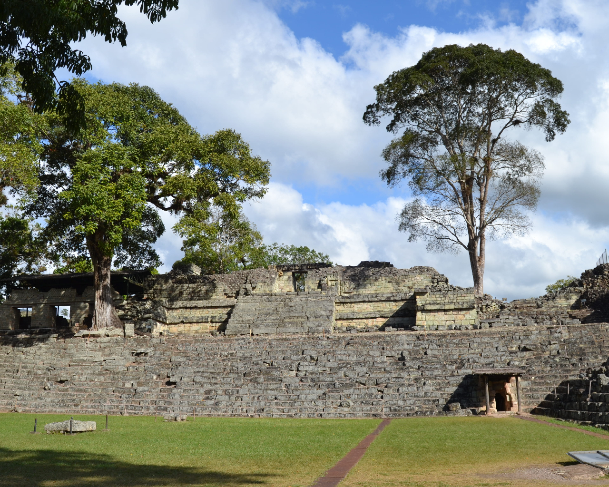
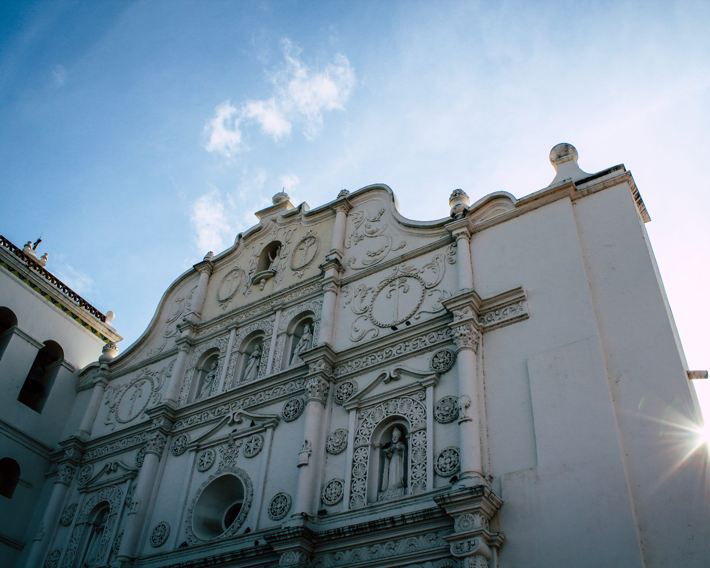
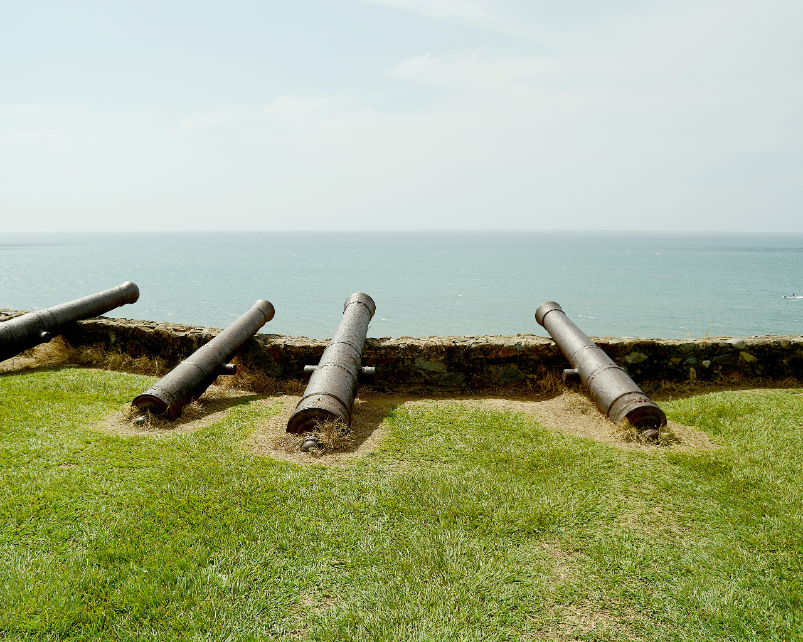

WELCOME TO ALMA CATRACHA
We are a page that resides in the United States, Which is dedicated to bring traditional products from the tropical country of Honduras, in order to learn about its rich coulture.

Copan ruinas
Copán is an archaeological site of the ancient
Mayan civilization located in the department
of Copán in western Honduras.

Catedral de Comayagua
The Cathedral of the Immaculate Conception or Comayagua Cathedral is a Catholic temple located in the city of Comayagua, Honduras, and is the cathedral of the Diocese

Fortaleza de Santa Barbara
The Santa Bárbara Fortress, also known as "El Castillo", is located in the city of Trujillo in the department of Colón, Honduras.